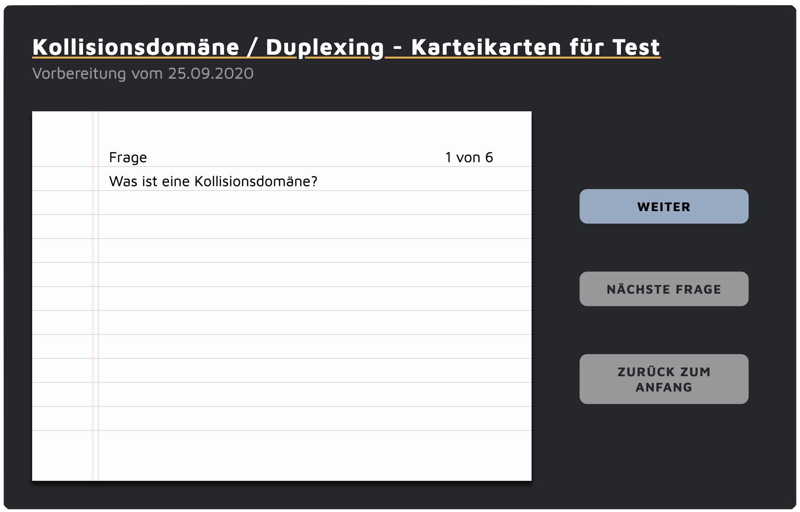

Grundlagen der Informationstechnik
Spannung und Strom, Berechnung von Widerständen, Begriffe der Informationstechnik, Zahlensysteme, PC-Technik, Aufbau und Funktionsweise von Stromkreisen. Statische Methoden, Datentypen und Schleifen in der Programmierung ...
